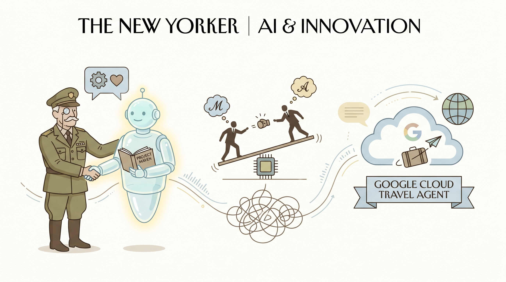

Anthropic推出人工智能代理交易测试市场。
两克伴AIGC日报
2026-04-26 星期日

本期关注：Anthropic推AI代理交易测试市场，ChatGPT-5.5与Claude 4.7竞逐顶尖模型，英伟达适配DeepSeek-V4，OpenAI、DeepMind深耕生命科学与医疗领域，微软调整企业AI战略，推动技术协同与应用落地。
📰 行业动态
Anthropic创建测试市场，AI代理进行买卖交易。
DeepSeek V4在硅谷闭源背景下，中国模型厂商走向开源协同。
DeepSeek V4测试：长文本、代码、推理能力表现。
🔥 今日焦点
在最新的AI资讯中，Ruben Hassid在 newsletter 中指出，ChatGPT-5.5 和 Claude 4.7 正在激烈争夺AI领域的顶尖位置。这一竞争不仅体现了当前AI技术的飞速发展，也凸显了这两款AI模型的强大实力。
ChatGPT-5.5 和 Claude 4.7 都在自然语言处理领域取得了显著成果，它们在语言理解、生成和交互等方面表现出色。这一竞争对于AI领域具有重要意义，一方面，它推动了AI技术的不断进步，促使研究人员在算法、模型和训练数据等方面进行创新；另一方面，它也加速了AI技术的应用落地，为各行各业带来更多可能性。
今日AI领域动态丰富，英伟达Blackwell平台成功适配DeepSeek-V4系列开源模型，为深度学习研究提供更强硬件支持。OpenAI发布生命科学专用模型GPT-Rosalind，旨在加速生物医学研究。DeepMind旗下Isomorphic Labs的AI设计药物即将进入人体试验，预示着AI在医疗领域的巨大潜力。微软调整AI战略，允许企业批量卸载Windows 11 Copilot，提升企业部署灵活性。
这些动态对AI领域具有重要意义。英伟达的适配举措将推动深度学习技术的发展，OpenAI的新模型有望加速生命科学研究的进程。DeepMind的药物设计试验展示了AI在医疗领域的突破性应用。微软的战略调整则体现了AI技术在企业级应用中的不断成熟和适应性。
Axle是一款基于Claude的a11y/WCAG CI工具，它通过分析代码并提出实际的源代码修复建议，为提升网站无障碍性和遵循WCAG标准提供了一种创新解决方案。该工具的核心内容是通过自动化分析代码中的无障碍性问题，并直接提供可执行的修复代码，极大地简化了开发者对无障碍性问题的处理过程。
Axle的重要性在于，它不仅有助于提升网站的无障碍性，使其更好地服务于残障人士，而且还能帮助开发者快速遵循WCAG标准，避免因不合规而导致的潜在法律风险。在AI领域，Axle的出现具有里程碑意义，它展示了AI在软件开发领域的应用潜力，特别是在提升软件质量、自动化测试和修复方面。
🛠️ 产品推荐
Show HN：JSS（JumpstartSignal）是一款免费ESG股票筛选器，每日更新。该产品旨在帮助用户通过系统化、长期视角分析股票，而非追逐热点。JSS提供详尽的5阶段筛选流程，并公开其亏损和操作方法，让用户了解其运作机制。通过JSS，用户可以轻松筛选出符合ESG标准的优质股票，降低投资风险，实现稳健投资。
---
Show HN: Implit 是一款AI辅助工具，旨在识别和防范伪造的AI生成依赖。该产品通过先进的AI技术，能够有效检测并揭示数据依赖中的伪造信息，帮助用户确保数据质量和分析结果的可靠性。对于技术从业者而言，Implit能够极大提升工作效率，降低因数据错误导致的决策风险，是保障数据安全与准确性的得力助手。
---
Show HN: RewardGuard是一款用于检测强化学习训练循环中奖励黑客攻击的工具。该产品通过实时监控训练过程，识别并防止恶意行为，确保训练的公平性和可靠性。RewardGuard能够有效解决强化学习训练过程中可能出现的奖励黑客攻击问题，提升模型训练的稳定性和准确性。对于技术从业者而言，该产品有助于保障强化学习模型的训练质量，提高AI系统的可靠性和安全性。